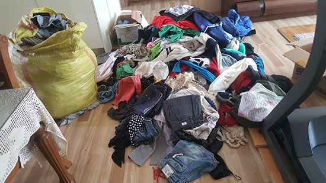
우리 동네 헌옷 방문수거
헌옷 팔 땐, 일번지.
헌옷일번지
비워지는 우리 집,
다시 쓰이는 소중한 자원.
무거운 헌옷과 쌓아둔 물건들,
직접 옮기지 마세요. 저희가 찾아갈게요.
- ✓ 직접 방문
- ✓ 현장 계량
- ✓ 일정 상담
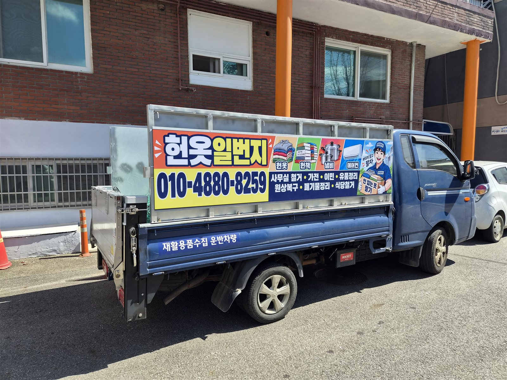
헌옷일번지가 직접 찾아갑니다현장 계량
가벼워지는 일상의 시작직접 방문 수거눈앞에서 무게 확인현장에서 정산
WHY HEONOT ILBEONJI
버리기는 아깝고,
정리는 막막했다면
쌓아둔 헌옷을 직접 옮길 필요 없습니다.
헌옷일번지가 직접 방문해 무게를 확인하고 현장에서 정산합니다.
※ 헌옷은 20kg 이상부터 수거합니다. 단, 추가 품목이 있을 시 문의 주세요.
PICKUP ITEMS
이런 품목을 수거해요
품목 상태에 따라 수거 여부가 달라질 수 있어요.
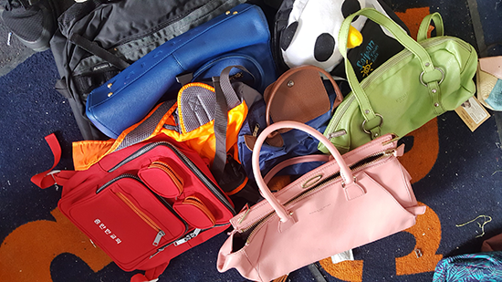
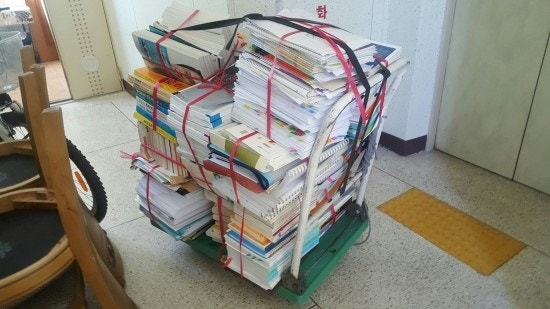
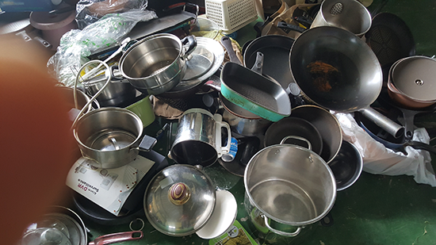
BEFORE YOU PACK
정리하기 전에,
이것만 확인해 주세요.
수거 가능한 물건과 제외 품목을 모았어요.
품목별 수거 조건과 준비 방법을 확인해 주세요.
헌옷 방문수거20kg 이상
헌책·종이 묶음20~30cm 높이를 균일하게
냉장고·세탁기 등 유상수거연식이 적으면서 사용 가능
헌옷 · 의류
20kg 이상수거 가능각종 옷가지, 장갑, 모자, 스카프, 속옷, 양말 등
수거 불가단체복, 유니폼 (문의), 오염이 심한 의류, 기름 묻은 작업복
신발 · 가방
제외 품목 확인신발운동화, 구두
수거 불가마모가 심하거나 삭아서 신을 수 없는 신발, 부츠 등 겨울신발, 슬리퍼, 장화, 삼선슬리퍼, 약간이라도 벌어지거나 찢어진 신발
신발은 더운 나라로 수출되어 겨울신발은 수거하지 않습니다.
가방핸드백, 배낭, 학생가방, 지갑
수거 불가하드케이스 가방, 여행용 캐리어 (최근 캐리어는 가능)
액세서리 · 침구 · 주방용품
침구 일부 무상액세서리·소품넥타이, 벨트(혁띠), 인형, 목걸이, 반지, 시계
무상 수거커튼, 담요, 얇은 이불
수거 불가솜이불, 두꺼운 이불, 쿠션
주방용품냄비, 프라이팬, 숟가락 등등, 접시 (박스에 파손되지 않게 포장)
헌책 · 도서 · 종이
묶어서 준비준비 방법20~30cm 높이로 균일하게 노끈으로 묶어 주세요.
수량이 많다면미리 알려주시면 별도 방문 일정을 상담해 드립니다.
컴퓨터 · 가전제품
연식·상태 상담상담 품목PC 본체, 모니터, 노트북, 에어컨, TV, 냉장고, 세탁기
유상수거 조건냉장고·세탁기 등 가전제품은 고장이 없고 연식이 7년 이하인 경우 유상수거합니다.
제품 종류, 연식과 작동 상태를 알려주세요. 금액과 자세한 수거 조건은 상담 시 안내드립니다.
장식품 · 취미용품 · 기타 물품
편하게 문의상담 품목장식품, 민속품, 놋그릇, 중고 스마트폰, 레코드판, 수석, 미싱(재봉틀), 생필품, 시계, 낚시 용품, 전기 자전거
목록에 없는 물건도 종류와 상태를 알려주시면 수거 가능 여부를 안내해 드립니다.
그림으로 한눈에
혹시, 집에 이런 물건도 있나요?
안 쓰는 물건, 함께 문의해 주세요.
그림을 누르면 해당 품목의 수거 기준을 볼 수 있어요.
정리가 필요한 순간에도
물건 수거부터 심부름까지
이사 전 안쓰는 물건 정리, 고인 유품 정리, 가정 폐기물 처리, 사무실 정리,
간단한 심부름도 문의해 주세요.
OUR PICKUP STORIES
사진으로 만나는
우리 동네 수거 이야기
차곡차곡 모아두신 물건들이 새 쓰임을 찾도록.
헌옷일번지의 실제 수거 현장을 소개합니다.
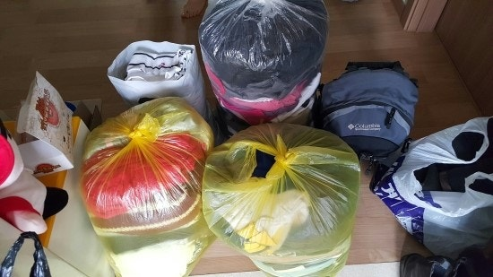
계절이 바뀌면, 옷장도 가볍게
안 입는 옷을 모아두고 방문 일정을 상담하세요.
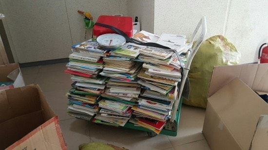
한 권 한 권, 모이면 꽤 무겁죠
무거운 책은 직접 옮기지 말고 문의해 주세요.
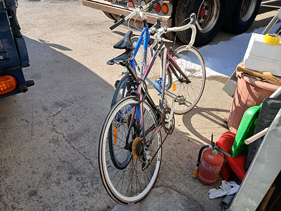
운반까지 저희가 함께할게요
현장에서 확인한 물품을 차량으로 옮깁니다.
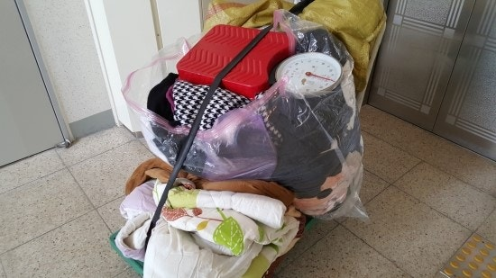
무게는 눈앞에서 확인해요
품목과 무게를 함께 확인하고 정산합니다.
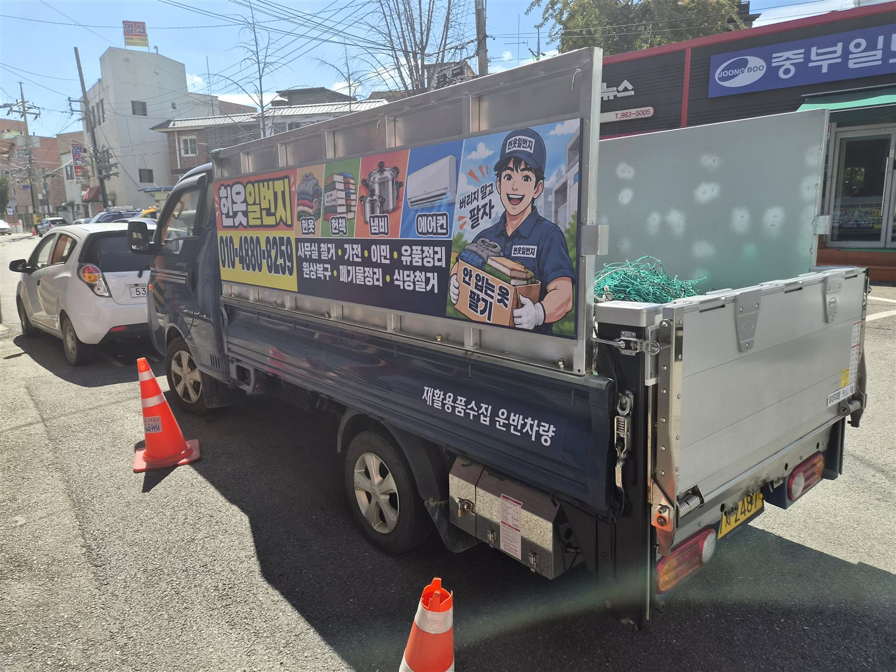
익숙한 동네, 반가운 수거 차량
약속한 일정에 헌옷일번지가 찾아갑니다.
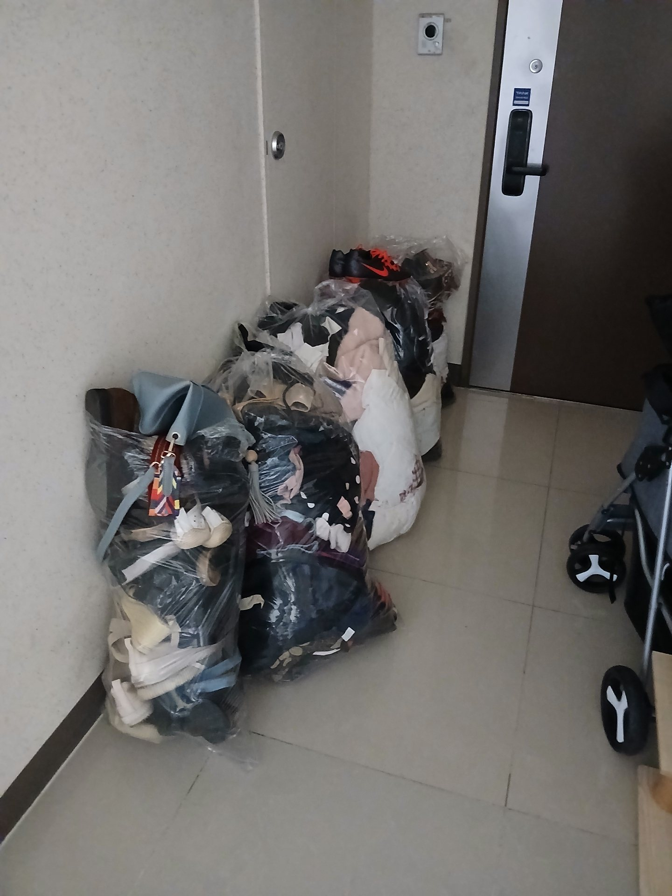
모아두신 만큼, 공간은 넓어지고
의류와 신발, 가방을 한 번에 상담해 보세요.
HOW IT WORKS
신청부터 수거까지, 간단하게
- 01✎
간편 신청
연락처와 주소, 예상 수거량을 남겨주세요.
- 02◷
전화 안내
신청을 확인하고 연락드려 방문 일정을 정합니다.
- 03⌂
방문 수거
약속한 시간에 방문해 안전하게 수거합니다.
- 04✓
수거 후 정산
무게와 품목을 확인하고 수거 방식에 맞춰 정산합니다.
SERVICE AREA
우리 동네도
수거할까요?
지도에서 지역을 눌러 대략적인 수거 범위를 살펴보세요. 정확한 방문 가능 여부와 일정은 주소·수거량을 확인한 뒤 안내드립니다.
수거 문의하기 →PICKUP MAP
방문수거 지역 안내
지도 준비 중
표시된 도형은 상담용 예시 범위입니다. 실제 수거 여부는 주소와 품목 확인 후 결정됩니다.
PICKUP REQUEST
수거 신청을
남겨주세요.
내용을 확인한 뒤 직접 연락드려 방문 일정을 정합니다.
대면·비대면 중 편한 방식을 선택해 주세요.
전화 상담010-4880-8259월–토 주간 운영 · 일요일 및 야간 제외
FAQ
자주 묻는 질문
더 궁금한 점은 편하게 전화로 문의해 주세요.
헌옷은 가능하면 20kg 이상부터 수거 가능합니다. 다만, 추가 품목이 있다면 문의 후 수거 가능합니다. 신발·가방·헌책·가전 등 다른 품목은 종류와 수량을 알려주시면 수거 조건을 안내해 드립니다.
각종 옷가지와 장갑, 모자, 스카프, 속옷, 양말 등을 수거합니다. 단체복·유니폼은 문의 바랍니다. 품목별 수거 기준을 확인해 주세요.
비대면 수거 적극 환영합니다. 비대면 수거 시에는 정산 시 계좌 입금됩니다.
품목별 가격과 정산 방식은 전화 상담 시 안내드립니다. 방문 후 실제 무게와 품목을 확인하고, 비대면 수거는 계좌로 정산합니다.
미리 연락 주시면 가능합니다. 주소는 경기도 고촌읍 전호로56번길 30, 1층 (우측) 입니다.